Contents
function tutorial2()
2. Frequency analysis
This tutorial covers basic frequency analysis of the EEG signal. The recording that is used is of a subject performing the SSVEP (steady-state visual evoked potential) paradigm. In simplest terms: when we look at a light that is flashing on and off at a certain frequency 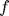, the neurons in our visual cortex will resonate at the same frequency (plus the harmonics  , 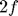, 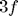, ...) This phenomenon can be used to create a brain-computer interface. Different options are presented on the screen, each flashing at a different frequency. By determining the frequency at which the visual cortex is resonating, the option that is attended can be distinguished from the rest.
, 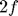, 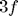, ...) This phenomenon can be used to create a brain-computer interface. Different options are presented on the screen, each flashing at a different frequency. By determining the frequency at which the visual cortex is resonating, the option that is attended can be distinguished from the rest.
In the current case, the subject is a witness in a cluedo murder mystery. He will try to communicate the murderer, weapon and location. The options available for selection, along with their corresponding frequency are as follows:
Murderer:
Colonel Mustard (8Hz)
Miss Scarlett (10Hz)
Professor Plum (12Hz)
Reverend Green (15Hz) Weapon:
Axe (8Hz)
Poison (10Hz)
Revolver (12Hz)
Rope (15Hz) Location:
Billiard Room (8Hz)
Dining Room (10Hz)
Kitchen (12Hz)
Library (15Hz)The data is located on my public dropbox account. Again, running the code below will download the data, which will take some time depending on the speed of your internet connection.
NOTE: The data used in this tutorial is EEG data that has been bandpass filtered with a 3rd order Butterworth filter with a passband of 1.0-40 Hz. When performing analysis on other data, you might have to filter it yourself. Bandpass filtering is covered in the 3rd tutorial.
urlwrite('http://dl.dropbox.com/u/79303435/tutorial2-01.mat?dl=1', 'tutorial2-01.mat');
Using load to load the Matlab file and printing the variables stored within:
m = load('tutorial2-01.mat'); disp('Fields of m:'); disp(fields(m));
Fields of m:
'Murder_filteredEEG'
'Weapon_filteredEEG'
'Room_filteredEEG'
The three variables of interest are Murder_filteredEEG, Weapon_filteredEEG and Room_filteredEEG
murder_EEG = m.Murder_filteredEEG; weapon_EEG = m.Weapon_filteredEEG; room_EEG = m.Room_filteredEEG; disp('Shape of murder_EEG:'); disp(size(murder_EEG)); disp('Shape of weapon_EEG:'); disp(size(weapon_EEG)); disp('Shape of room_EEG:'); disp(size(room_EEG));
Shape of murder_EEG:
14 2560
Shape of weapon_EEG:
14 2560
Shape of room_EEG:
14 2560
The data was recorded using the Emotiv EPOC device. It has 14 channels and a sample rate of 128Hz:
nchannels = size(murder_EEG, 1);
nsamples = size(murder_EEG, 2);
sample_rate = 128;
fprintf('Duration of recordings: %.1f seconds\n', nsamples / sample_rate);
Duration of recordings: 20.0 seconds
The subject was looking for 20 seconds at one of the four selection options. If we plot the PSD (power spectral density) of the channels on the visual cortex, there should be a distinctive peak at the frequency of the attended option. The algorithm to calculate a PSD is provided by the function pwelch:
help pwelch;
PWELCH Power Spectral Density estimate via Welch's method.
Pxx = PWELCH(X) returns the Power Spectral Density (PSD) estimate,
Pxx, of a discrete-time signal vector X using Welch's averaged,
modified periodogram method. By default, X is divided into eight
sections with 50% overlap, each section is windowed with a Hamming
window and eight modified periodograms are computed and averaged.
If the length of X is such that it cannot be divided exactly into
eight sections with 50% overlap, X will be truncated accordingly.
Pxx is the distribution of power per unit frequency. For real signals,
PWELCH returns the one-sided PSD by default; for complex signals, it
returns the two-sided PSD. Note that a one-sided PSD contains the
total power of the input signal.
Note also that the default window (Hamming) has a 42.5 dB sidelobe
attenuation. This may mask spectral content below this value (relative
to the peak spectral content). Choosing different windows will enable
you to make tradeoffs between resolution (e.g., using a rectangular
window) and sidelobe attenuation (e.g., using a Hann window). See
WinTool for more details.
Pxx = PWELCH(X,WINDOW), when WINDOW is a vector, divides X into
overlapping sections of length equal to the length of WINDOW, and then
windows each section with the vector specified in WINDOW. If WINDOW is
an integer, X is divided into sections of length equal to that integer
value, and a Hamming window of equal length is used. If the length of
X is such that it cannot be divided exactly into integer number of
sections with 50% overlap, X will be truncated accordingly. If WINDOW
is omitted or specified as empty, a default window is used to obtain
eight sections of X.
Pxx = PWELCH(X,WINDOW,NOVERLAP) uses NOVERLAP samples of overlap from
section to section. NOVERLAP must be an integer smaller than the WINDOW
if WINDOW is an integer. NOVERLAP must be an integer smaller than the
length of WINDOW if WINDOW is a vector. If NOVERLAP is omitted or
specified as empty, the default value is used to obtain a 50% overlap.
[Pxx,W] = PWELCH(X,WINDOW,NOVERLAP,NFFT) specifies the number of FFT
points used to calculate the PSD estimate. For real X, Pxx has length
(NFFT/2+1) if NFFT is even, and (NFFT+1)/2 if NFFT is odd. For complex
X, Pxx always has length NFFT. If NFFT is specified as empty, the
default NFFT -the maximum of 256 or the next power of two
greater than the length of each section of X- is used.
Note that if NFFT is greater than the segment the data is zero-padded.
If NFFT is less than the segment, the segment is "wrapped" (using
DATAWRAP) to make the length equal to NFFT. This produces the correct
FFT when NFFT < L, L being signal or segment length.
W is the vector of normalized frequencies at which the PSD is
estimated. W has units of rad/sample. For real signals, W spans the
interval [0,Pi] when NFFT is even and [0,Pi) when NFFT is odd. For
complex signals, W always spans the interval [0,2*Pi).
[Pxx,W] = PWELCH(X,WINDOW,NOVERLAP,W) where W is a vector of
normalized frequencies (with 2 or more elements) computes the
PSD at those frequencies using the Goertzel algorithm. In this
case a two sided PSD is returned. The specified frequencies in W are
rounded to the nearest DFT bin commensurate with the signal's
resolution.
[Pxx,F] = PWELCH(X,WINDOW,NOVERLAP,NFFT,Fs) returns a PSD computed as
a function of physical frequency (Hz). Fs is the sampling frequency
specified in Hz. If Fs is empty, it defaults to 1 Hz.
F is the vector of frequencies at which the PSD is estimated and has
units of Hz. For real signals, F spans the interval [0,Fs/2] when NFFT
is even and [0,Fs/2) when NFFT is odd. For complex signals, F always
spans the interval [0,Fs).
[Pxx,F] = PWELCH(X,WINDOW,NOVERLAP,F,Fs) where F is a vector of
frequencies in Hz (with 2 or more elements) computes the PSD at
those frequencies using the Goertzel algorithm. In this case a two
sided PSD is returned. The specified frequencies in F are rounded to
the nearest DFT bin commensurate with the signal's resolution.
[...] = PWELCH(...,'twosided') returns a two-sided PSD of a real signal
X. In this case, Pxx will have length NFFT and will be computed over
the interval [0,2*Pi) if Fs is not specified and over the interval
[0,Fs) if Fs is specified. Alternatively, the string 'twosided' can be
replaced with the string 'onesided' for a real signal X. This would
result in the default behavior. The string 'twosided' or 'onesided'
may be placed in any position in the input argument list after NOVERLAP.
PWELCH(...) with no output arguments by default plots the PSD
estimate in dB per unit frequency in the current figure window.
EXAMPLE:
Fs = 1000; t = 0:1/Fs:.296;
x = cos(2*pi*t*200)+randn(size(t)); % A cosine of 200Hz plus noise
pwelch(x,[],[],[],Fs,'twosided'); % Uses default window, overlap & NFFT.
See also PERIODOGRAM, PCOV, PMCOV, PBURG, PYULEAR, PEIG, PMTM, PMUSIC,
SPECTRUM, DSPDATA.
Reference page in Help browser
doc pwelch
Below is some code that calculates the PSD for some channels of the murderer EEG block:
% These channels are roughly in the area covering the visual cortex channels_of_interest = [1, 2, 3, 12, 13, 14]; % Create a new figure figure('Position', [100, 100, 1000, 500]); % Draw the PSD of each channel of interest for i = 1:length(channels_of_interest) ch = channels_of_interest(i); % The main plot is devided into 6 subplots: one for each channel % They are layed out in a grid: 2 rows and 3 columns subplot(2, 3, i); % Calculate the PSD [murder_PSD, freqs] = pwelch(murder_EEG(ch,:), nsamples, [], [], sample_rate); % Plot the PSD plot(freqs, murder_PSD); % Each graph should have the same scale, otherwise we cannot compare them xlim([0, 40]); ylim([0, 60]); % Add some decoration grid(); xlabel('Frequency (Hz)'); ylabel('PSD (dB)'); title(sprintf('Channel %d', ch)); end

The EEG recording made by the Emotiv EPOC is noisy: there are many peaks. Still, the peak at 10Hz is strongest as can be observed at channels 1 and 14. Therefore the conclusion is that the murderer is Miss Scarlett.
Automatic classification
A common approach to automatically determine the frequency that is present most strongly is Canonical Correlation Analysis (CCA) [1]. The idea is that an EEG recording of someone looking at a SSVEP stimulus with frequency , will be highly correlated with a generated sine wave with the same frequency. More so than a generated sine wave with a different frequency. Under the condition that the EEG signal and the generated sine are in phase (e.g. the waveforms 'line up'). This condition is problematic, as we have no guarantee that this will be the case. To counter the phase shift, we correlate the EEG signal with both a sine and a cosine wave, following the same logic employed by the Fourier transform. If the sine wave correlates poorly, the cosine will correlate strongly and vice versa, as long as the frequencies match.
Simple correlation analysis only compares two vectors, lets call them 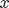 and 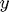. For example a single EEG channel and an artificial signal of the same length. In our case we have multiple EEG channels, so vector becomes a matrix 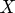 with samples along the rows and channels in the columns. We are testing this signal against multiple sine and cosine waves, generated with frequence and also some harmonics of ( and in this case). So becomes a matrix  with the generated samples in the rows and each column containing either a sine or cosine generated with some frequency.
with the generated samples in the rows and each column containing either a sine or cosine generated with some frequency.
The CCA procedure can be seen as a way to calculate the correlation between two sets of vectors simultaniously, a set of vectors being the same as a matrix. It does so be calculating a vector 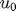, which is a linear combination of the columns of and a vector  , which is a linear combination of the columns of , in such a way that the correlation coefficient
, which is a linear combination of the columns of , in such a way that the correlation coefficient  between and is maximal. It then goes on to calculate more vectors 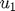 and 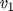 that are uncorrelated with and and maximally correlated with each other. In our case however, we are only interested in the correlation between and .
between and is maximal. It then goes on to calculate more vectors 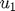 and 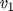 that are uncorrelated with and and maximally correlated with each other. In our case however, we are only interested in the correlation between and .
The task of our classifier is what we did manually before: to pick, out of the frequencies of all the stimuli on the screen, the one that best corresponds to what is present in the EEG signal. Therefore, for each frequency, we calculate a score for that frequency by performing CCA between the EEG signal and a matrix of generated sine/cosine waves with the frequency and its harmonics. Finally we pick the frequency with the highest score.
[1] Frequency recognition based on canonical correlation analysis for SSVEP-based BCIs. Lin, Zhonglin / Zhang, Changshui / Wu, Wei / Gao, Xiaorong, IEEE transactions on bio-medical engineering, 53 (12 Pt 2), p.2610-2614, Dec 2006, http://www.ncbi.nlm.nih.gov/pubmed/17152442
The CCA algorithm is provided by the matlab canoncorr function:
help canoncorr;
CANONCORR Canonical correlation analysis.
[A,B] = CANONCORR(X,Y) computes the sample canonical coefficients for
the N-by-P1 and N-by-P2 data matrices X and Y. X and Y must have the
same number of observations (rows) but can have different numbers of
variables (cols). A and B are P1-by-D and P2-by-D matrices, where D =
min(rank(X),rank(Y)). The jth columns of A and B contain the canonical
coefficients, i.e. the linear combination of variables making up the
jth canonical variable for X and Y, respectively. Columns of A and B
are scaled to make COV(U) and COV(V) (see below) the identity matrix.
If X or Y are less than full rank, CANONCORR gives a warning and
returns zeros in the rows of A or B corresponding to dependent columns
of X or Y.
[A,B,R] = CANONCORR(X,Y) returns the 1-by-D vector R containing the
sample canonical correlations. The jth element of R is the correlation
between the jth columns of U and V (see below).
[A,B,R,U,V] = CANONCORR(X,Y) returns the canonical variables, also
known as scores, in the N-by-D matrices U and V. U and V are computed
as
U = (X - repmat(mean(X),N,1))*A and
V = (Y - repmat(mean(Y),N,1))*B.
[A,B,R,U,V,STATS] = CANONCORR(X,Y) returns a structure containing
information relating to the sequence of D null hypotheses H0_K, that
the (K+1)st through Dth correlations are all zero, for K = 0:(D-1).
STATS contains eight fields, each a 1-by-D vector with elements
corresponding to values of K:
Wilks: Wilks' lambda (likelihood ratio) statistic
chisq: Bartlett's approximate chi-squared statistic for H0_K,
with Lawley's modification
pChisq: the right-tail significance level for CHISQ
F: Rao's approximate F statistic for H0_K
pF: the right-tail significance level for F
df1: the degrees of freedom for the chi-squared statistic,
also the numerator degrees of freedom for the F statistic
df2: the denominator degrees of freedom for the F statistic
Example:
load carbig;
X = [Displacement Horsepower Weight Acceleration MPG];
nans = sum(isnan(X),2) > 0;
[A B r U V] = canoncorr(X(~nans,1:3), X(~nans,4:5));
plot(U(:,1),V(:,1),'.');
xlabel('0.0025*Disp + 0.020*HP - 0.000025*Wgt');
ylabel('-0.17*Accel + -0.092*MPG')
See also PRINCOMP, MANOVA1.
Reference page in Help browser
doc canoncorr
Below is a function that implements the classifier:
function winner = ssvep_classifier(EEG, frequencies) % SSVEP classifier based on Canonical Correlation Analysis (CCA). % Given a list of frequencies, this function will return the frequency % that is present the most strongly in some given EEG signal. % The matrix X is our EEG signal, but we transpose it so % observations (=samples) are on the rows and variables (=channels) % are on the columns. X = EEG'; % Keep track of the score for each frequency scores = []; % Calculate a timeline in seconds, so we can construct % sine/cosine waves with the correct frequencies time = (1:nsamples) / sample_rate; % Calculate sines/cosines for all possible frequencies for frequency = frequencies % Calculate this part only once y = 2 * pi * frequency * time; % Construct the matrix Y containing the base frequency and 2 harmonics Y = [sin(y); cos(y); sin(2*y); cos(2*y); sin(3*y); cos(3*y)]'; % Perform canonical correlation, we only care about the % coefficients: [~, ~, R] = canoncorr(X,Y); % Note the highest (= first) coefficient as the final score for % this frequency scores = [scores R(1)]; end % Return the frequency with the highest score [~, winner_index] = max(scores); winner = frequencies(winner_index); end
Putting the classifier to work, lets solve the murder completely:
fprintf('Murderer frequency: %d Hz.\n', ssvep_classifier(murder_EEG, [8, 10, 12, 15])); fprintf('Weapon frequency: %d Hz.\n', ssvep_classifier(weapon_EEG, [8, 10, 12, 15])); fprintf('Room: frequency: %d Hz.\n', ssvep_classifier(room_EEG, [8, 10, 12, 15]));
Murderer frequency: 10 Hz. Weapon frequency: 15 Hz. Room: frequency: 12 Hz.
Looking at the table at the beginning of this tutorial, this means Miss Scarlett was the murderer, using a rope in the kitchen.
end